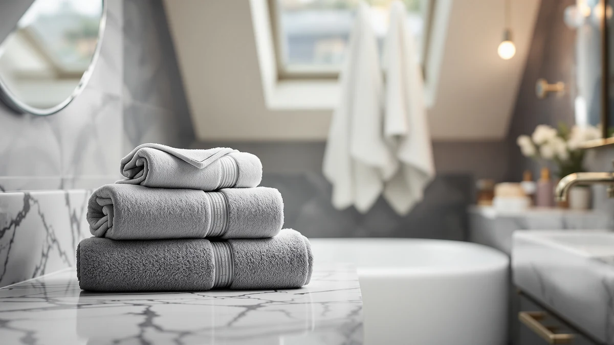

Bath Towel vs Bath Mat (2026)
Prices and picks verified as of August 2026. Independent, reader-supported reviews.


Things to Know Before You Buy
- They solve different problems. A bath towel dries your skin, and a bath mat protects the floor from water and slips, so the bath towel vs bath mat choice is rarely either-or.
- Absorbency works differently for each. A cotton towel soaks up roughly three to four times its own weight in water, while a mat holds water on its surface until you wring it out.
- Materials diverge by job. Towels lean on cotton terry rated in GSM, while mats depend on pile height and grip on tile.
- Care instructions are not interchangeable. Towels handle hot water and frequent washing, while rubber-backed mats often need cold water and air drying.
- Price rarely settles the debate. A solid towel and a solid mat both land in the $10 to $30 range per piece.
The bath towel vs bath mat question comes up the moment you start replacing worn-out bathroom textiles, because the two products solve different problems even though they sit inches apart on the same rail. One dries your body, and the other keeps your feet off cold, wet tile.
This guide breaks down what separates a towel built to dry skin from a mat built to keep your floor safe, so you know where to spend your bathroom budget first.
Quick Answer
Neither product wins the bath towel vs bath mat comparison outright: a towel wins for drying your body quickly without leaving lint, and a mat wins for keeping the floor dry and safe underfoot. If you can only buy one this month, prioritize the mat for safety, then add a quality towel with your next paycheck.
What is Bath Towel?
A bath towel is the everyday piece you reach for the moment you step out of the shower. Standard sizes run around 27 by 52 inches, and the fabric wraps or pats down your body until it is dry enough to get dressed. In the bath towel vs bath mat lineup, the towel is the piece you use on yourself, not the floor.
You will find bath towels in cotton, Turkish cotton, and cotton-microfiber blends, with weight measured in grams per square meter (GSM). A towel in the 500 to 600 GSM range feels plush and absorbs well without turning into a heavy, slow-drying brick once soaked. Bath towels have no rubber backing and no traction of their own. They earn their keep through daily use, not through grip. If you want a deeper look at fiber and weight choices, our bath towel buying guide covers the full range.
What is Bath Mat?
A bath mat sits on the floor next to the tub or shower, and its entire job is to catch water before it reaches the tile. Where a towel dries you, a mat protects the room, which is the core split in the bath towel vs bath mat comparison. Sizes vary more than towels do, typically running from around 20 by 32 inches up to 35 by 70 inches for oversized runners.
Materials split into a few families: cotton or chenille mats that soak up water like a towel does, memory foam mats that cushion your feet, and rubber or coral fleece mats built for maximum grip on wet tile. Backing matters as much as the top layer, since a rubber or latex underside is what keeps the mat from sliding when you step on it with wet feet. Because a mat lies flat and traps moisture underneath, it needs more attention than a towel to avoid mildew.
Head-to-Head: Build Quality & Durability
On durability, the bath towel vs bath mat gap comes down to what each product has to survive. A towel absorbs water and dries, cycle after cycle, and a well-made 600 GSM cotton towel handles years of hot washes before the loops start to thin. A mat faces a harder test: foot traffic, standing water, and repeated wet-dry cycles stress the backing, and a rubber or latex layer that was not treated for mildew resistance can crack, peel, or develop a rubbery smell within a year.
Chenille and coral fleece mats resist that specific failure since they carry no rubber layer to break down, though they offer less grip on slick tile unless the base fabric has texture. Machine washability separates the two further: most towels tolerate hot water and high heat drying, while many mats specify cold water and air drying only, since heat is what breaks down rubber backing fastest.
Head-to-Head: Price & Value
Price rarely tips the bath towel vs bath mat decision, since both categories cover a similar range. A solid cotton bath towel runs about $10 to $20 per piece, and a mat with real non-slip grip lands close to the same $10 to $30 window, depending on size and material. Value looks different once you factor in lifespan: a towel you wash weekly can serve for three to five years, while a mat exposed to constant moisture and foot pressure often needs replacing sooner, especially once the backing starts to crack.
Head-to-Head: Use Experience
Day to day, the bath towel vs bath mat difference plays out in two separate moments. The towel meets you the second you step out of the shower, and a well-chosen one soaks up water in a few passes without leaving lint on your skin, then hangs on a bar and dries before your next use.
The mat catches drips while you are still in the shower, then gives you a stable, non-slip landing spot the moment you step out. A mat with real grip prevents the kind of slip that sends people to the emergency room, especially in a house with kids or older adults. A mat without proper backing can bunch up, slide on tile, or trap water underneath and start to smell within weeks. Skip the towel and you drip water walking to get dressed. Skip the mat and you step directly onto wet tile with bare, soapy feet, which is the riskier gap of the two.
When to Choose Bath Towel
Buy towels first if your current stack is thin, mismatched, or scratchy from years of hard water and cheap detergent. In the bath towel vs bath mat priority list, towels are the piece you touch every single day, so upgrading them pays off in comfort you feel immediately. You also want to prioritize towels if you are stocking a guest bathroom or an Airbnb, since a fresh set signals quality faster than almost anything else in the room. If your current mat still grips well and shows no cracking, put your budget toward our quick-dry towel picks this round.
When to Choose Bath Mat
Buy a mat first if your current one has a cracked backing, slides on the tile, or has started to smell no matter how often you air it out. In the bath towel vs bath mat priority list, a failing mat is a safety issue, not a comfort one, since it is the piece standing between wet, soapy feet and a hard floor. Households with kids, older adults, or anyone with balance concerns should treat mat replacement as urgent rather than optional. You also want a mat upgrade if you recently retiled a bathroom floor, since new tile can be even more slippery when wet than the surface it replaced.
Our Top Picks
Whichever side of the bath towel vs bath mat decision you land on this month, these three picks cover both categories at a similar price point.

Editor’s Pick
TEESHLY Bath Tub and Shower
A textured 40 by 16 inch mat that grips the tub floor and catches drips at the edge, a solid pick if your current mat has started sliding around.
$9.99
Check Price on Amazon
Best Value
OTHWAY Bath Tub Shower Mat
A 35 by 16 inch shower mat priced under $10 with a grippy underside, an easy way to add basic slip protection without stretching your budget.
$9.99
Check Price on Amazon
Premium Choice
YHPDYL Super Size Thick Coral
An oversized 35 by 70 inch coral fleece towel that wraps like a bath sheet, worth the upgrade if you dry off in one pass and skip the second towel entirely.
$12.99
Check Price on AmazonWhat is the main difference between a bath towel and a bath mat?
The main difference in the bath towel vs bath mat comparison is the job each one does.
Do I need both a bath towel and a bath mat?
Yes, in almost every bathroom you need both.
Frequently Asked Questions
What is the main difference between a bath towel and a bath mat?
Do I need both a bath towel and a bath mat?
Which dries faster, a bath towel or a bath mat?
Can a bath mat cause mold or mildew?
How often should I wash a bath mat versus a bath towel?
Final Verdict
The bath towel vs bath mat question has no single winner, since each product protects something different: your body on one side, your floor on the other. If your mat has lost its grip or started to crack, treat that as the urgent fix and start with a pick like the TEESHLY mat above, then put your next dollar toward a towel refresh.